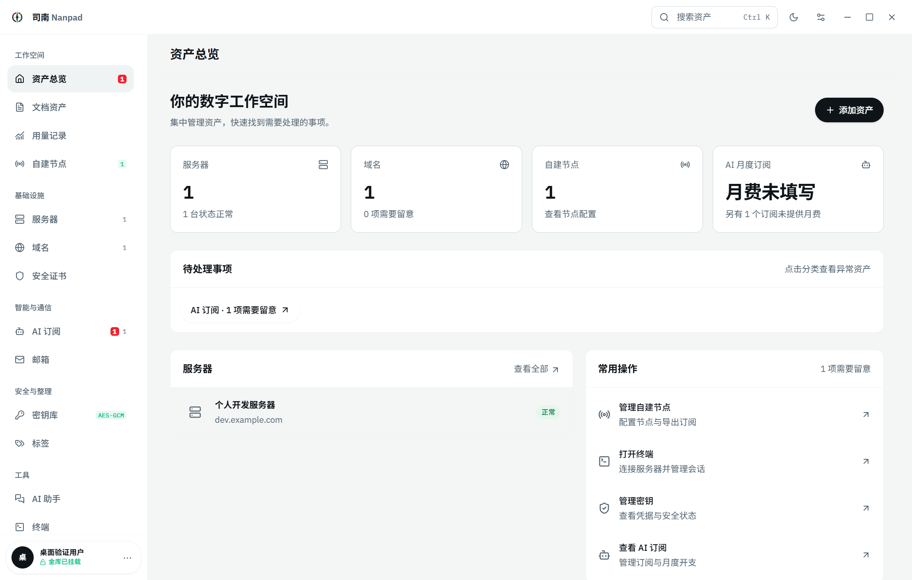

主机与节点，心中有数
SSH 终端、SFTP、主机指标、域名与证书到期提醒。导入 VLESS、VMess、Trojan、SS 和 HY2 分享链接。
OPEN SOURCE · LOCAL FIRST · v1.0
服务器的状态、部署时的笔记、每月的订阅与用量。
把散落的数字生活，收进一个自己的工作台。
Windows x64 · 开源免费 · 无需安装 Node.js

A PLACE FOR YOUR DIGITAL LIFE
SSH 终端、SFTP、主机指标、域名与证书到期提醒。导入 VLESS、VMess、Trojan、SS 和 HY2 分享链接。
独立文档，也能关联多项资产。记录部署过程、粘贴照片、收藏链接，自动保存；可选对接图床。
接入 3x-ui、机场订阅及支持的 API 用量接口。记录采集历史，失败保留上次数据，未知值不假装成零。
资产和文档保存在本机；凭据独立加密。邮箱、密钥分组、搜索和 AI 辅助问答，都在同一处。
BUILT IN THE OPEN
司南为独立开发者、自建服务爱好者，以及想把数字生活整理清楚的人而做。
欢迎试用、提交问题，或贡献一个让日常更顺手的改进。
司南是开源项目。目前提供 Windows x64 安装包；macOS 和 Linux 尚未提供经过验证的正式安装包。
资产、文档与用量历史默认保存在本机。启用图床会上传所选图片；连接邮箱、面板或 AI 服务会请求相应服务。使用远端 AI 问答时，相关上下文会发送给你配置的模型。请阅读安全说明。
不等于。订阅账号记录接口能提供的额度快照；API 用量采集依赖组织查询权限。网页订阅不提供的数据不会被估算成精确 Token。
目前 Windows 安装包没有代码签名。请从本仓库 Releases 下载，并对照随版本提供的 SHA256 校验文件。升级前建议按安全文档备份。
如果司南解决了你的一个小麻烦，欢迎给项目一颗 Star。